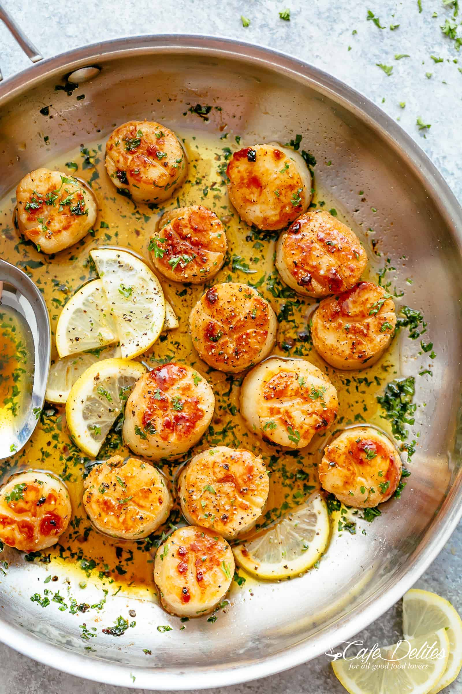

Lemon Garlic Butter Scallops

Description
These crispy, pan seared and juicy Lemon Garlic Butter Scallops are the ultimate treat when it comes to scallop recipes! Serve as a starter or main, nothing melts in your mouth quite like tender-crisp and buttery scallops.
Ingredients
- 2 Tablespoons olive oil
- 1 1/4 pounds (600 grams) scallops
- 3 tablespoons unsalted butter, divided
- 4-5 large garlic cloves, minced (or 1 1/2 tablespoons minced garlic)
- Salt and fresh ground black pepper to taste
- 1/4 cup dry white wine or broth
- 2 tablespoons lemon juice
- 1/4 cup chopped parsley
Steps
- If scallops are frozen, thaw in cold water. Remove the side muscle from the scallops if attached. Thoroughly pat dry with paper towels.
- Heat olive oil in a large pan or skillet over medium-high heat until hot and sizzling. Add the scallops in a single layer without over crowding the pan (work in batches if needed).
- Season with salt and pepper to taste and fry for 2-3 minutes on one side (until a golden crust forms underneath), then flip and fry again for 2 minutes until crisp, lightly browned and cooked through (opaque). Remove from skillet and transfer to a plate.
- Melt 2 tablespoons of butter in the same pan, scraping up any browned bits left over from the scallops. Add in the garlic and cook until fragrant (1 minute).
- Pour in wine (or broth) and bring to a simmer for 2 minutes or until wine reduces by about half. Stir in the remaining tablespoon of butter and lemon juice.
- Remove pan (skillet) from the heat; add the scallops back into the pan to warm through slightly and garnish with parsley.
- Serve over rice, pasta, garlic bread or steamed vegetables (cauliflower, broccoli, zucchini noodles).